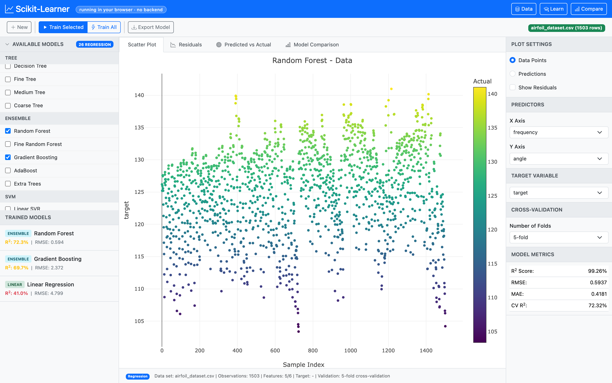

49 scikit-learn models, full cross-validation, instant Plotly visualisations. No signup. No data upload. Your CSV never leaves your machine.
Free · runs on Pyodide · first load ~10 s, then cached

All the power of scikit-learn, none of the ops. The whole runtime ships in the page.
Python + scikit-learn compiled to WebAssembly via Pyodide. No server, no Docker, no Render bill.
CSV uploads never touch a network. Everything runs inside your tab — air-gapped by default.
27 regressors and 22 classifiers across linear, tree, ensemble, SVM, neighbours and neural nets — compared on the same chart.
3 / 5 / 10-fold CV with R², MSE, RMSE, MAE for regression; accuracy, F1, precision, recall, ROC for classification.
Download any trained model as a real .joblib file ready to load() in your own Python project.
Iris, Wine, Breast Cancer, Digits, Diabetes, Airfoil Self-Noise — click and train, no upload needed.
No notebooks. No environment setup. No pip install.
Drop a CSV or pick a sample dataset. Classification or regression is auto-detected.
Choose your target column and predictors from a clean side panel.
Select one or many. Cross-validation runs automatically.
Inspect residuals, ROC, confusion matrices — then download the winning model.
Two task types, six families each. All run client-side.
Open a tab, train a model, ship the joblib.
Play →